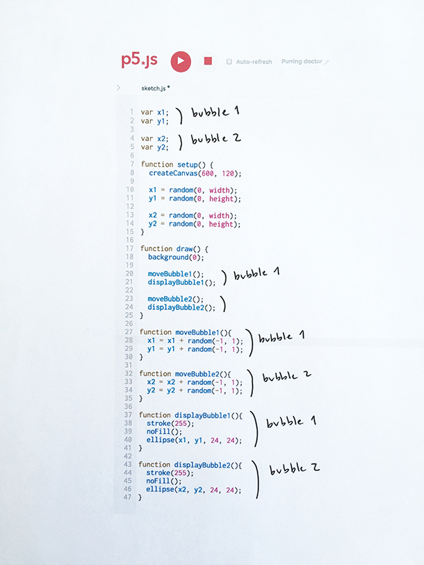
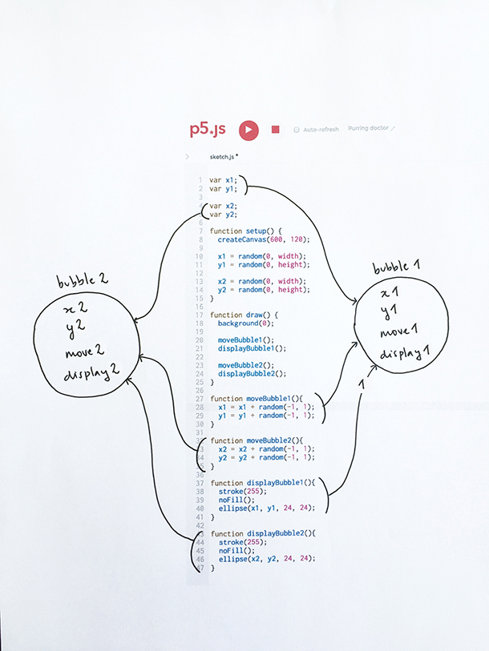
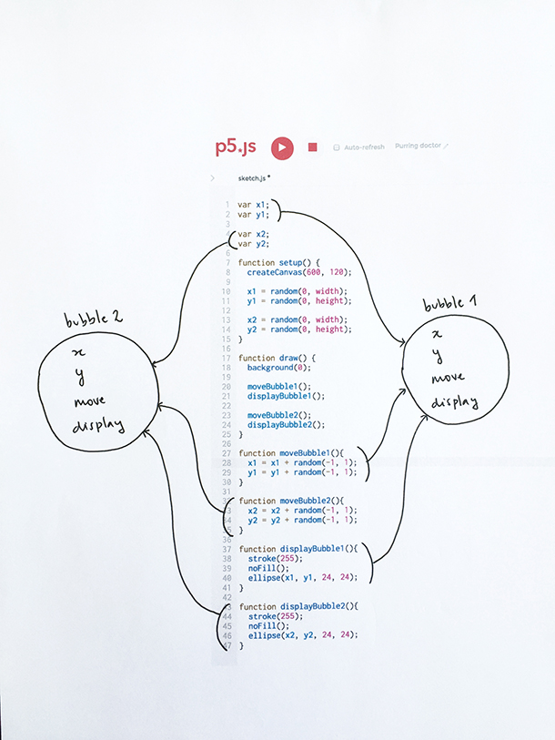
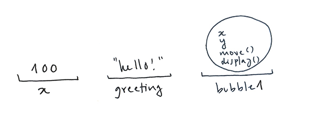
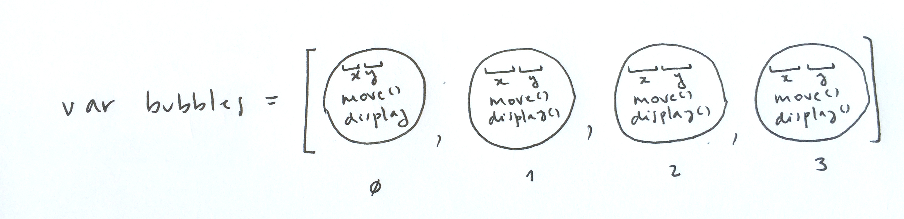
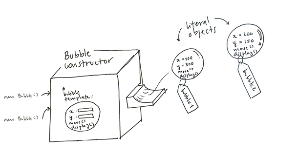

1) Group related variables and functions
Let's go back to the second example in LA1. We had two bubbles. Each bubble has a variable for its x position, another for its y position, a function that moves it, and a function that draws it. To keep track of which variable to use in which function, we added numbers to our variable and function names –-for example, in function moveBubble1 we should refer to x1, not to x2).
We know there are two groups of related variables and functions: x1, y1, moveBubble1 and displayBubble1 all relate to our first bubble; x2, y2, moveBubble2 and displayBubble2 all relate our second bubble.

An alternative way to do this, is to group x1, y1, moveBubble1 and displayBubble1 into one package, and group x2, y2, moveBubble2 and displayBubble2 into another one:

Notice that bubble1 and bubble2 look the same: we will create one generic package with variables x, y and functions move and display, and then use it for both:

2) Create a bubble literal object
In p5, packages made of variables and functions are called literal objects. Let's look at the syntax we use to define them. Below we create a literal object that represents a bubble, and put the object inside a variable and call it bubble1:
var bubble1 = {
x: random(0, width),
y: random(0, height),
display: function() {
stroke(255);
noFill();
ellipse(this.x, this.y, 24, 24);
},
move: function() {
this.x = this.x + random(-1, 1);
this.y = this.y + random(-1, 1);
}
}
Our object has four properties: x, y, and display and move, which happen to be functions. From inside these functions, x and y are referred to as this.x and this.y. The keyword this tells p5 we are referring to the x property that is defined in this object, as in the object that contains the function.
Notice that we are storing our literal object in a variable called bubble1: we have used p5 variables to hold numbers ( var x = 1 ), to hold texts ( var greeting = "hello!" ), but they can also hold objects like our bubble:

Now that we have our literal object let's use it. Here is a complete example: we create an object store it in the bubble1 variable, and then access its variables and functions using the dot operator, like so: bubble1.x, bubble1.y, and bubble1.move() and bubble1.display().
Try adding two more bubbles, and moving and displaying them.
3) Create an Array of Bubble Objects
When creating many bubbles, we can store them in an array:

This way we can use a for loop to create them (see setup below), and another for loop to access each bubble to move and display them (see draw ––remember bubbles.length holds the number of elements the bubbles array holds):
Let's say we now want to add a new bubble each time the user clicks the mouse. We would have to copy and paste the object code to the mouseClicked function. Something like this (this snippet still needs the setup and draw code from above to work):
function mouseClicked(){
bubbles[bubbles.length] = {
x: random(0, width),
y: random(0, height),
display: function() {
stroke(255);
noFill();
ellipse(this.x, this.y, 24, 24);
},
move: function() {
this.x = this.x + random(-1, 1);
this.y = this.y + random(-1, 1);
}
}
}
The first time you click the mouse, the length of the array is ( we create four bubbles in setup). A fifth bubble is created and added to the bubbles array: its length is now 5. The second time the mouse is clicked, a sixth bubble is created and added to the array, and so on.
Of course for this mouseClicked function to work we need to add our setup and draw functions. Here is the complete example ––click on the canvas to create new bubbles:
Notice that lines 41 to 52 in setup are exactly the same as lines 14 to 25 in our mouseClicked function. By now we know that repeating code is not a good thing: it makes our programs longer, harder to read, and more error-prone. In the next section, we will write a function that creates objects for us so that we don't have to re-state what a bubble is each time we want to create a new one. This kind of function is called a Constructor function, and it will allow us to replace the code above with this:
function mouseClicked(){
var lastBubblePosition = bubbles.length;
bubbles[length] = new Bubble();
}
4) Create a Bubble Constructor function
A Constructor function is like an object-creating factory. It knows what the structure of an object is, and uses this template to create new ones. In our case, the function is called Bubble (by convention, constructor functions are capitalized). It knows that bubbles have four properties, x, y, move, and display, that x and y should be initialized with random values, and that move and display are functions, and what exactly they do.
When the statement new Bubble() is executed (which is to say when the constructor is called), a new literal object is created

This sketch does the same as the previous one, but it uses the Constructor function to create its four bubble objects: